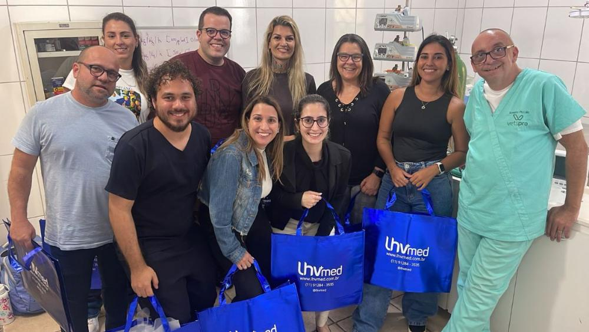

Pela 1ª vez, o método que formou mais de 2.000 veterinários — ao vivo, na sala com você. Aprenda a anestesiar com o que você tem, para as cirurgias da sua rotina.
Veterinários que já anestesiam na rotina e querem elevar a técnica com conceitos modernos de anestesia e analgesia.
Acabou de investir num aparelho de anestesia inalatória e precisa aprender a "pilotar" o equipamento com segurança.
Você vai entender o que não fazer na dissociativa e como melhorar sua técnica com protocolos simples e fáceis de aplicar.
Se você está no 4º ano da faculdade e quer ser clínico de cães e gatos, este curso é para você também.
O objetivo é melhorar a técnica anestésica que o veterinário já faz no dia a dia, com conceitos modernos de anestesia e analgesia — segurança, bem-estar, pós-operatório e recuperação.
Sem anestésicos difíceis de comprar, sem equipamentos onerosos. Você aprende a anestesiar com a estrutura que tem na clínica.
Castrações, OSH, procedimentos do dia a dia do clínico de cães e gatos. O foco é melhorar o que você já faz.
Cada participante é tratado como estagiário no primeiro dia. Tudo é mostrado e explicado de forma simples, com aplicabilidade imediata.
Conceitos modernos de anestesia e analgesia que melhoram a segurança do paciente, o pós-operatório e a recuperação.
Você aprende com soro contado em gotas e também com equipamentos modernos de precisão. Nada é descartado.
Você sai sabendo o que pode resolver e quando é hora de pedir reforço. Limites claros, decisões seguras.
Eleve o nível da sua anestesia com uma experiência única, onde a anestesia dos veterinários muda para um nível extraordinário.
Anestesia injetável de qualidade — protocolos limpos, seguros e replicáveis na rotina.
Anestesia inalatória aplicada ao seu aparelho — sem mistério, com prática e precisão.
Bloqueios locorregionais que cabem no dia do clínico de pets, com analgesia que muda o pós-operatório.
Manejo de dissociativos — o que não fazer e como melhorar com protocolos simples.
Pacientes especiais — pediátrico, geriátrico, braquicefálicos: anamnese e ajustes.
Checklist de segurança para implementar na sua clínica já na semana seguinte ao curso.
Decisão clínica — quando você resolve, quando chama o anestesista. Sem dúvida.

Anestesia Descomplicada foi desenvolvido pelo médico-veterinário anestesista Renato Piccolo. Em mais de uma década formando profissionais, Renato consolidou um método em que cada participante é tratado como um estagiário no primeiro dia — tudo é mostrado e explicado de forma simples e direcionada à aplicabilidade no dia a dia.
É autor do livro Anestesia Descomplicada em Cães e Gatos, referência prática para clínicos e estudantes que querem ir além do básico sem se perder em equipamentos caros ou anestésicos difíceis de comprar.
Preencha o formulário ao lado e nosso time entra em contato para confirmar disponibilidade de vaga e condições de pagamento.